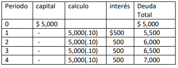
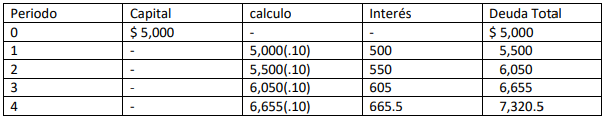

Disciplina que consta de un conjunto de herramientas matemáticas que aplicadas a problemas económicos nos permiten una adecuada toma de decisiones, considerando como unidad de medida la unidad monetaria.
Desde luego el elemento central en torno al cual girará todo razonamiento en la toma de decisiones será el Dinero lo cual nos llevará a conocer lo que es el Sistema de Dinero y su funcionamiento. Generalmente no nos sorprende la facilidad con que hoy realizamos transacciones utilizando dinero en efectivo, tarjetas de crédito o débito, cheques o bien transferencias electrónicas, esto último desde luego a partir de cuentas bancarias, tampoco nos sorprende que las personas ya no guarden su dinero en casa y más bien prefieran que el banco les pague algo de intereses por depositar su dinero en una cuenta. Éste es parte del ambiente al cual nos referiremos a lo largo de nuestro curso.
Dicho ambiente fue haciéndose más evidente en nuestro País a partir de finales de los 70´s del siglo pasado siendo sobre todo en los 80´s cuando se estableció una política deliberada para la creación de la “Cultura Financiera”, es decir se trató a partir de entonces de incorporar a la mayor cantidad de personas en el uso de los servicios financieros como una práctica generalizada y normal, a la fecha dicha cultura es la que impera sobre todo en las grandes ciudades del País y el medio urbano.
En nuestro curso, lo económico siempre estará representado por el Dinero, y al igual que cualquier mercancía el dinero también funciona bajo un sistema de mercado, es decir de Oferta y Demanda. Los oferentes serán aquellos quienes poseen dinero excedente y están dispuestos a prestarlo o invertirlo a cambio de un pago en el futuro (interés) adicional a la recuperación de su capital, por otra parte los Demandantes serán empresas o personas que al no tener dinero recurrirán a los Oferentes para recibir en préstamo al dinero y a cambio de usar dinero de otros deberán pagar (intereses) por ello. Desde luego los Intereses serán el precio de mercado del dinero, dicho precio se pagará después de transcurrido cierto tiempo.
El mercado de Dinero puede como en otros casos clasificarse en Formal, y estará integrado por el Sistema Financiero; Instituciones financieras gubernamentales la SHCP, Banco de México e instituciones reguladoras como la CNBV, entre otros, e instituciones privadas como Bancos, Aseguradoras, Uniones de crédito, Casas de Bolsa, y toda empresa formalmente constituida dedicada al negocio del dinero como las Instituciones Prendarias entre otras. Mercado Informal es aquel que está integrado básicamente por prestamistas individuales “Agiotistas” que no están constituidos como empresas y por tanto no pagan impuestos. La existencia del mercado informal se debe fundamentalmente a la rigidez del mercado formal, por los requisitos que son exigibles por el oferente y la imposibilidad de cubrirlos por parte del Demandante del préstamo, cosa que no ocurre en el caso del mercado informal ya que prácticamente el único requisito para acceder a un préstamo es el valor de la garantía que queda en prenda. La diferencia mayor entre ambos mercados son los intereses que genera una deuda, mientras que un crédito hipotecario bancario podría pagar intereses al 20% anual, un crédito informal generaría intereses al 12% mensual, es decir una tasa anual del 289.60% anual.
Regresando a nuestra definición de la Ingeniería Económica ¿Qué significa decidir? Decidir significa elegir, pero ¿Cuándo se elige?, Solo se elige cuando hay opciones o alternativas, desde luego las opciones o alternativas son aquello que está a mi alcance presupuestario. Aquello que está por arriba de mi presupuesto no es alternativa para mí.
Al menos podemos distinguir: Decisiones Objetivas y Decisiones Subjetivas.
Las Decisiones Objetivas están caracterizadas por la medición de sus resultados, es decir son medibles y cuantificables en dinero.
Las Decisiones Subjetivas son aquellas que no se rigen por ninguna convención, no son medibles y cuantificables, y dependen fundamentalmente de los Gustos y las Preferencias de cada individuo.
En nuestro curso adoptaremos en todo momento las Decisiones Objetivas y para ello conoceremos un conjunto de técnicas que nos permitan cuantificar, comparar y decidir que alternativa es la mejor.
Todos los participantes del sistema económico ya sean individuos o empresas usan el dinero, es decir tienen ingresos (entradas de dinero) y egresos (Salidas de dinero), a cada movimiento de dinero le llamaremos Flujo de Efectivo, también cada cierto tiempo por ejemplo un mes, a la suma de los ingresos se le resta todos los egresos del mes dando como resultado un Saldo, a ese “Saldo del mes” se le llamará Flujo Neto de Efectivo (FNE) y sirve para controlar de mejor manera al dinero,( un buen ejemplo de esto es el estado de cuenta bancario que nos llega cada mes a casa).
Decíamos previamente que en el sistema económico hay quienes logran acumular excedentes de dinero, a ellos los identificaremos más que como oferentes de dinero serán inversionistas, todo inversionista esperará recibir un pago o “premio” en el Futuro por haber invertido o prestado su capital, ese pago será adicional al monto de su capital, a esa cantidad adicional le llamaremos Interés, generalmente el Interés se calcula multiplicando un factor porcentual por el capital cada cierto tiempo dando como resultado el interés, dicho factor porcentual se conoce como Tasa de Interés, las tasas de interés toman como periodo máximo un año y de ahí hacia periodos menores.
Cada tasa de interés debe expresar su periodo de aplicación, pero cuando no lo dice, convencionalmente se entiende que es anualizada, el periodo de aplicación de la tasa se conoce como Periodo de Interés. Todo movimiento de dinero que implique un cobro o un pago de intereses en el futuro le llamaremos Operación Financiera. Toda operación financiera tiene dos momentos: Momento Presente y Momento Futuro.
El Momento Presente marca el inicio de la Operación Financiera y siempre se ve involucrado el capital. El Momento Futuro marca el final de la operación financiera y tendrá que ser liquidada la operación. El tiempo que hay entre el Momento Presente y el Momento Futuro puede o está dividido en periodos, dichos periodos se llamarán Periodos de Pago.
Un principio que debemos observar en solución de problemas es que los Periodos de Pago estén expresados en el mismo periodo que el Periodo de Interés, de no ser así debemos modificar la tasa y su periodo de interés para igualarla a Periodo de Pago o bien modificar los Periodos de Pago e igualar al Periodo de Interés.
En la Ingeniería Económica existen dos conceptos que se consideran como los más importantes: El Valor del Dinero a Través del Tiempo y la equivalencia.
El Valor del Dinero a Través del Tiempo significa que todo inversionista sabe cuánto gana su capital a partir del momento en que lo invierte o lo presta y cada cuanto tiempo, también sabe que dicha ganancia debe ser real, por lo tanto su tasa de ganancia o de interés debe ser la suma de la tasa de inflación más una tasa como premio, a esa tasa de ganancia le llamaremos Tasa de Interés. Es decir El Valor del Dinero en el Tiempo es un concepto estrictamente financiero (La Inflación será un tema que incorporaremos en el 3er parcial).
Por otra parte la Equivalencia significa que el inversionista es indiferente (le da lo mismo) entre tener hoy $100 o tener $120 dentro de un año, sabiendo que su tasa de interés o de ganancia es del 20% anual. Entonces la tasa de Equivalencia es la Tasa de Interés.
Finalmente, independientemente de que se trate de un mercado financiero formal o informal, siempre se debe observar la Convención Fin de Periodo, esto significa que no debe haber duda acerca del momento justo en que se ubican los flujos de efectivo así como el pago de los intereses.
Existen dos procedimientos de cálculo: Interés Simple e Interés Compuesto:
Obtuve un préstamo por $5,000 a una tasa del 10% simple anual y me comprometí a pagar capital e intereses dentro de 4 años. ¿Cuánto pagaré?

Tendré que pagar al final del año 4 la cantidad de $7,000.
Es un procedimiento que consiste en que el interés del periodo uno se obtiene de multiplicar al capital por la tasa de interés, dicho interés se suma al capital y sobre su resultado se aplica la tasa de interés obteniéndose el interés del periodo dos, dicho interés se suma a su base de cálculo y sobre el resultado se aplica la tasa de interés obteniéndose el interés del periodo tres y así sucesivamente. Debido a que el interés de cada periodo se suma al capital también se le conoce como interés capitalizado lo cual significa que el interés genera interés en los periodos sucesivos. Para aplicar este procedimiento la tasa de interés puede decir compuesto, capitalizado o no decir nada al respecto (la única excepción es cuando la tasa dice Simple). El interés compuesto es el que hace funcionar a los mercados financieros en el mundo y por esto es la base de la Ingeniería Económica.
Obtuve un préstamo por $5,000 a una tasa del 10% compuesto anual y me comprometí a pagar capital e intereses dentro de 4 años. ¿Cuánto pagaré?

Tendré que pagar al final del año 4 la cantidad de $7,320.5
En este ejemplo la diferencia de la cantidad a pagar en el año 4, es decir $7320.5-7000=320.5 corresponde a la capitalización de los intereses o interés sobre interés y por esto se dice que el interés compuesto es el procedimiento que mejor ejemplifica el Valor del Dinero a Través del Tiempo.
Para facilitar el entendimiento de problemas se ha creado una simbología y diagramas que facilitan el análisis de casos.
SIMBOLOGÍA:
Son representaciones (dibujos) que toman como base una Línea del Tiempo, misma que dividiremos en los Periodos de Pago que sean necesarios según el caso que estemos analizando.
En dicha línea del tiempo ubicaremos los Flujos de Efectivo según corresponda (siempre observando la convención “Fin de Periodo”). Desde luego la utilidad principal de los diagramas es que contemos adecuadamente los periodos que implica cada operación.
En la parte de “arriba” de la línea del tiempo ubicaremos todos los flujos que impliquen Ingresos y en el área de “abajo ” de la línea horizontal se representarán todos los flujos que impliquen Egresos.
Se identificarán como Ingresos: Recibir sueldo, obtener un préstamo, premios, obtener una herencia, recibir bonos, etc…
Serán Egresos: abrir una cuenta bancaria, otorgar préstamos, invertir, pagar intereses, pagar renta, etc…
Cada Flujo de efectivo se representará con una línea recta vertical ubicada en el periodo que corresponda con una flecha apuntando hacia arriba o hacia abajo según se trate de un ingreso o un egreso respectivamente.
Ejemplos de representación de Flujos:

Hasta aquí hemos hablado de 2 herramientas que son la SIMBOLOGÍA y los DIAGRAMAS DE FLUJO, y el tercer elemento son las EQUIVALENCIAS, mismas que describiremos a manera de REGLAS, acompañadas de sus FACTORES y FÓRMULAS.
REGLA 1.- El Valor Futuro Equivalente de una cantidad Presente conocida siempre se ubica en el último flujo de la operación financiera, dada una tasa de interés mayor a cero.
Ésta regla puede representarse mediante el diagrama.
Somos un grupo de profesionales del Instituto Politecnico Nacional, de Mexico. Un Informatico de UPIICSA, IPN; un Economista por la ESE, IPN; y un doble ingeniero, Energia por la UAM y electricidad por la ESIME del IPN.
Los 3 nos conocimos en el Centro de Estudios Cientificos y Tecnologicos #13, CECyT 13 RFM, IPN, todos egresados de la carrera de Tecnicos en Administracion de Empresas.
Hemos ejercido la carrera y tenemos experiencia en empresas de cobranza, banca, comercio electronico, experiencia en GRP con el gobierno Mexicano, desarrollo de aplicaciones y algunas inversiones.
Nuestra mision es compartir el conocimiento y experiencia obtenidos, no del modo teorico tradicional sino mas bien a modo de charla y con nuestras experiencias.
Nos unimos para colaborar en este proyecto de los cursos porque fuimos estudiantes, y ahora somos profesionales y no nos gusto ver que muchos temas academicos son obsoletos en el mundo laboral y hay mucha deficiencia en la enseñanza. Ademas que la enseñanza es deficiente y en nuestra opinion le falta practica.
Estamos a tu servicio.
Nos visualizamos subiendo al menos un video a la semana diversificando temas de videos desde tutoriales hasta cosas especificas e interesantes, donde al pasar el tiempo los contenidos se enriqueceran.
Dadas las caracteristicas y experiencia de nuestros colaboradores podemos ofrecerte cursos competentes en las disciplinas de Administracion e Ingenieria, ademas de desarrolo de proyectos que involucren programacion y administracion.
Comentarios, Sugerencias del sitio, Sugerencias de contenido...